Operating Documentation
Direction 5181178-800, Rev# 16
BrightSpeed Select Service Methods Gen
Module Version 2.0, Version Date 11/5/12
Operating Documentation |
| Required Persons | Preliminary Reqs | Procedure | Finalization |
|---|---|---|---|
| 1 | 0 min | 20 mins | 0 min |
This procedure outlines the process required to set up a NEC & EIZO LCD Display Monitors. If a system has more than one of these monitors, each must be setup. The procedure time listed above is for each monitor. An active video input signal must be connected to each monitor to perform this process.
| NOTE: | Adjustments made with the monitor's display setup has no affect on filmed images. Adjustments made in the Operator Workspace of the Operator Console's (which is displayed on the monitor) will impact filmed images. |
| NOTE: | For an overview of monitor front panel controls
and monitor informational messages for the NEC 1990SXi LCD Display
Monitor, see NEC 1990SXi On Screen Manager Controls For an overview of monitor front panel controls and monitor informational messages for the EIZO S1921-X LCD Display Monitor, see Eizo S1921-X Screen Manager Controls |
| Last Revised on: | 10 October 2011 |
Connect the video cable(s) between the Operator Console’s HOST computer and each monitor’s inputs. See the following Illustrations for the appropriate LCD Display Monitor.
| NOTE: | Do not use OEM Manufacturer’s supplied video cables. |
Illustration 1: NEC 1990SXi LCD Display / Image Monitor Connections
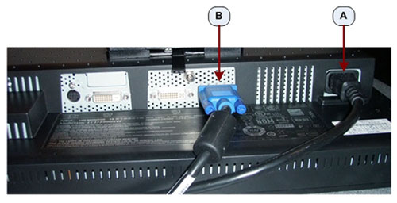
Illustration 2: EIZO S1921-X LCD Display / Image Monitor Connections
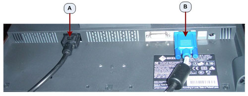
Table 1: Monitor Connections
| A | Power Cable Connection |
| B | SVGA Video Connection - Display / Image Monitor (right) |
| C | DVI-A Video Connection - Prescription / Scan Monitor (left) |
Illustration 3: NEC 1990SXi LCD Prescription / Scan Monitor Connections
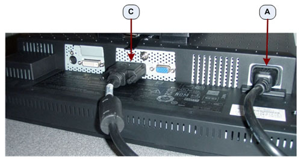
Illustration 4: EIZO S1921-X LCD Prescription / Scan Monitor Connections
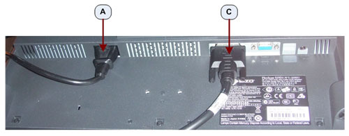
Connect the AC in line cord from the Operator Console to each monitor's rear side using the GE supplied console power cord. See Illustrations above.
| NOTE: | Do not use the OEM Manufacturer's supplied power cord. |
Apply power to each monitor. Press the front panel power button to apply power to each monitor. See the following Illustrations.
Illustration 5: NEC 1990SXi Power Switch
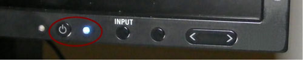
| NOTE: | The NEC 1990SXi has a Main Power Switch and is a true
on/off switch. If the switch is in the OFF position, the monitor cannot be turned on using the power button
on the front panel. Illustration 6: NEC 1990SXi Main Power Switch 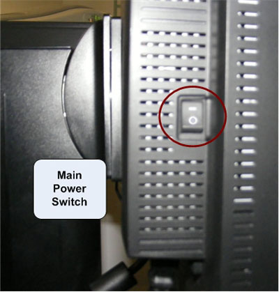 |
Illustration 7: EIZO S1921-X Power Switch
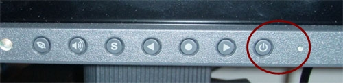
The LCD monitor comes configured with OEM default settings and must be properly set up with GE Healthcare Systems settings. The following steps must be performed on all LCD monitors on system.
Access NEC On-Screen Manager by pressing Exit, Left, Right, Up or Down control buttons on monitor display front panel. See Illustration 8.
| NOTE: | On-Screen Manager detail can be found here NEC 1990SXi On Screen Manager Controls |
Illustration 8: NEC 1990SXi LCD Monitor Control Buttons
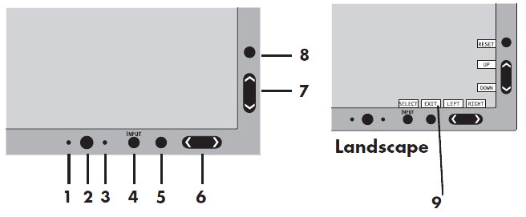
| Description | Function | |
| 1 | Ambibright Sensor | Detects the level of ambient lighting allowing the monitor to make adjustments to various settings resulting in a more comfortable viewing experience. Do not cover this sensor. |
| 2 | Power | Turns the monitor on and off. |
| 3 | LED | Indicates that the power is on. Can be changed between blue and green in the Advanced OSM Control menu. |
| 4 | INPUT/SELECT | Enters the OSM Control menu. Enters OSM sub menus. Changes the input source when not in the OSM Control menu. |
| 5 | EXIT | Exits the OSM sub menu. Exits OSM Control menu. |
| 6 | LEFT/RIGHT | Navigates to the left or right through the OSM Control menu. |
| 7 | UP/DOWN | Navigates up or down through the OSM Control menu. |
| 8 | RESET/ROTATE OSM | Resets the OSM back to factory settings. Pressing when the OSM is not showing rotates the OSM Control menu between portrait and landscape mode. |
| 9 | KEY GUIDE | The Key Guide appears on screen when the OSM control menu is accessed. The Key Guide will rotate when the OSM control menu is rotated. |
Due to the fact that On-Screen Manager can be accessed by anyone, custom setting can be altered. To assure correct baseline settings, first reset to monitor back to OEM presets. Navigating to [Menu Tools] on the On-Screen Manager Main Menu and press Input / Select. Select Factory Presets using the Up/Down arrow buttons and press Input/Select. All settings will be return to OEM presets.
Return to the On-Screen Manager Main Menu display by pressing the Exit button as many times as appropriate to step back to main menu.
Select the [Contrast and Brightness Menu] on the On-Screen Manager Main Menu using the Left/Right arrow buttons and press Input/Select.
Using the Up/Down arrow buttons select [AUTO Contrast] setting and press Input / Select.
Using the Up/Down arrow buttons select [AUTO BRIGHTNESS] and press Input / Select. Select Option 2 and press Input / Select.
Return to the On-Screen Manager Main Menu display by pressing the Exit button as many times as appropriate to step back to main menu.
Select [AccuColor Controls] on the On-Screen Manager Main Menu using the Left/Right arrow buttons and press Input / Select. Select Option 1 and press Input / Select. Option 1 sets color temperature to 9300K.
Press Exit button as many times as appropriate to turn off On-Screen Manager on the monitor display.
Access EIZO Screen Manager on monitor display by pressing Enter control button on monitor front panel. See Illustration 9.
| NOTE: | Screen Manager detail can be found here EIZO S1921-X - Screen Manager Controls |
Illustration 9: EIZO S1921-X LCD Monitor Control Buttons
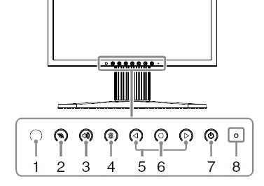
| Description | Function | |
| 1 | Sensor | The sensor detects ambient brightness. Auto EcoView function. |
| 2 | EcoView | Displays the setting menu of Auto EcoView and EcoView Index. |
| 3 | Volume Control | Displays the volume adjustment menu. |
| 4 | Input Signal Selection | Switches input signals for display. |
| 5 | Control (Left, Right) | • Displays the brightness adjustment window (page 8). • Chooses an adjustment item or increases/decreases adjusted values for advanced adjustments using the Adjustment menu. |
| 6 | Enter | Displays the Adjustment menu, determines an item on the menu screen, and saves values adjusted. |
| 7 | Power | Turns the power on or off. |
| 8 | Power indicator | Indicates monitor’s operation status. Blue: Operating Orange: Power saving Off: Power off. |
Due to the fact that Screen Managers can be accessed by anyone, custom setting can be altered. To assure correct baseline settings, first reset monitor back to OEM presets. Navigating to [Others] on the Adjustment Menu using the Left/Right arrow buttons and press Enter. Select [Reset] from the Others Menu using the Left/Right arrow buttons and press Enter. Then select Reset on the Reset Menu using the Left/Right arrow buttons and press Enter. All settings will be return to OEM presets.
Return to the Adjustment Menu by selecting [Return] using the Left/Right arrow buttons and pressing Enter as many times as appropriate to step back to main menu.
Select [Color Adjustment] on the Adjustment Menu using the Left/Right arrow buttons and press Enter. Select [Temperature] using the Left/Right arrow buttons and press Enter. Then set color temperature to 6500K using the Left/Right arrow buttons and press Enter.
Exit the Screen Manager menu by pressing Left/Right arrow buttons to select the [Return] and press Enter as many times as appropriate to step back to main menu. Select [Exit] from the Adjustment Menu to exit the Screen Manager.
| NOTE: | Exit the Screen Manager menu may also be accomplished by pressing Enter button twice quickly. |
Disable the Auto EcoView Feature on this monitor. Press the EcoView button to display the EcoView Menu. Use the Left/Right arrow buttons to select Auto EcoView Off and press Enter.
Press the EcoView button again to turn off the EcoView Menu display.
The image monitor must be properly adjusted first before calibrating any camera filming devices. This procedure describes how to adjust the image monitor. Once the image monitor is adjusted, it is essential to re-calibrate the camera before the system is used for filming.
The Society of Motion Picture and Television Engineers (SMPTE) test pattern is used to provide a standard image for calibrating the Contrast, Brightness, Window, and Level of the display for a scanner.
Illustration 10: Sample Test Pattern
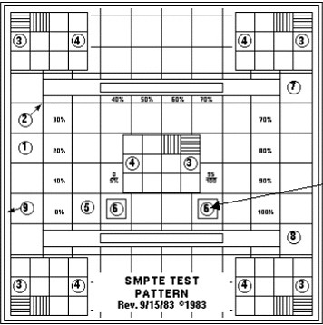
Access the Common Service Desktop (CSD).
From the CSD select the Image Quality tab.
From the menu select Install SMPTE pattern image. An Installation Window will appear.
Allow the SMPTE pattern to load. A "Successful Copy" message will appear when the load is complete.
| NOTE: | It can take as long as 10-12 minutes for the SMPTE pattern to load. Load progress shows up as successive dots in the Installation Window. |
Press <Enter> to leave the Installation Window.
Click the [Image Works] icon, and select the Image Browser.
Use the scroll bar, as required, to select the SMPTE test image from the Exam list.
Click Full Viewer. If necessary, use the FORMAT option to select Full Screen mode.
Leave the SMPTE test pattern on the image monitor.
Set the default Window Setting to 100.
With the cursor inside the SMPTE image displayed, hold down the middle mouse button and move the mouse in the horizontal plane. View the window control value at the base of the image and set the window control value to 100.
Set the default Level Setting to 1024.
With the cursor inside the SMPTE image displayed, hold down the middle mouse button and move the mouse in the vertical plane. View the level control value at the base of the image and set level control value to 1024.
Inspect the SMPTE image displayed. The image should display all shades or the gray-scale. Fine adjust image brightness and contrast on monitor as necessary.
Remove the SMPTE Pattern by selecting a different Exam from the browser, or by selecting <ESC> on the keyboard.
| NOTE: | Because Operators are able to adjust Brightness and Contrast, they should be made aware of the impact on display image quality of doing so. If an Operator chooses to deviate from the above setups, the look of the camera film may be impacted as well. With the Image Monitor adjusted to properly display the SMPTE image, Film Camera Option Calibration may be completed if so equipped. |
Place your hands on the side of the monitor.
Lift or lower the monitor to the desired height.
Illustration 11: Raise or Lower LCD Monitor Screen
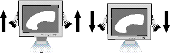
Grasp both sides of the monitor screen with your hands.
Adjust the monitor tilt and swivel as desired.
Illustration 12: LCD Monitor Tilt and Swivel
No finalization steps.